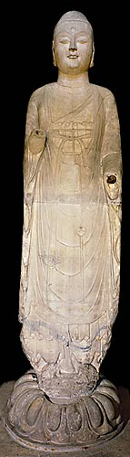

First mention of a Buddhist community in Jiangsu.
|

White marble figure of the Buddha Amitabha
|
A Buddhist community in China is first mentioned in A.D. 65. Buddhism found its way into China along the Silk Road, when the Chinese started to trade with India and other countries to their west.
Buddhists meditate to help them find Enlightenment. They also follow the sacred rules such as not to kill, steal, tell lies, commit adultery or drink alcohol. Buddhists believe that when they die they are reincarnated; they continue to be reincarnated until the person reaches Nirvana.
|